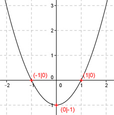

Aufgabe 3 Der Graph einer ganzrationalen Funktion 2. Grades geht durch die Punkte (-1|0), (0|-1) und (1|0). Wie lautet seine Funktionsgleichung?  Allgemeine Form einer ganzrationalen Funktion 2. Grades: f(x) = ax² + bx + c f’(x) = 2ax + b f’’(x) = 2a 3 Bedingungen: 1. Geht durch den Punkt (-1|0) bedeutet: f(-1) = 0 --> a * (-1)² + b * (-1) + c = 0 --> a - b + c = 0 I 2. Geht durch den Punkt (0|-1) bedeutet: f(0) = - 1 --> a * 0² + b * 0 + c = - 1 --> c = -1 3. Geht durch den Punkt (1|0) bedeutet: (c = -1 eingesetzt) f(1) = 0 --> a * 1² + b * 1 - 1 = 0 --> a + b - 1 = 0 II c = -1 in I eingesetzt: a - b - 1 = 0 III I + III a - b - 1 = 0 a + b - 1 = 0 -------------- 2a - 2 = 0 |+2 2a = 2 |:2 a = 1 a = 1 in III eingesetzt: 1 + b - 1 = 0 b = 0 Gesuchte Funktionsgleichung: f(x) = x2 - 1